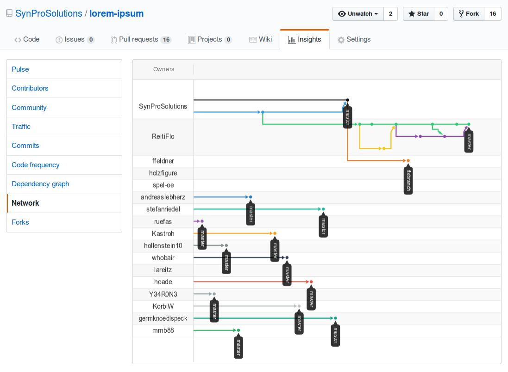

class: center, middle <!-- begin of slide content --> # Git Workshop für fortgeschrittene Einsteiger .center[<a href="https://xkcd.com/1597/"></a>] --- # Agenda für Workshop IEEE Student Branch Graz / 09.05.2018 1. Vorstellungsrunde 2. Arbeiten mit Git 3. Zeit für Fragen --- # Wer sind wir? .center[<a href="https://synpro.solutions/?git-workshop-ieee-2018-05"></a>] <table> <tr><td><strong>Darshaka Pathirana:</strong></td><td>Git-User seit 2009</td></tr> <tr><td><strong>Michael Prokop:</strong</td><td>Git-User seit 2006</td></tr> </table> Wir bieten Systemadministration und -integration für KMUs (Schwerpunkt Linux) an. Heterogene Umgebungen gehören aber zu unserem Alltag. Git verwenden wir täglich und ist für uns unverzichtbar. --- # Vorstellungsrunde * Wer war bei unserem letzten Workshop dabei? * Was erwartest du dir vom Workshop? Wünsche / Vorschläge? --- ## Github-Forks von lorem-ipsum <div style="text-align:center"> <a href="https://github.com/SynProSolutions/lorem-ipsum/network">  </a> </div> --- # Folien vom Einsteigerworkshop <pre><code class="plain hljs remark-code"><span class="hljs-string">% git clone https://github.com/synprosolutions/git-workshop-ieee-2018.git</span> </code></pre> <a href="https://synpro.solutions/git-workshop-ieee-2018">https://synpro.solutions/git-workshop-ieee-2018</a> --- # Voraussetzungen * Git ist installiert * Git ist konfiguriert (Name, Email, Editor) --- # Praxis ## Forken und Clonen 1. Fork von <a href="https://github.com/SynProSolutions/lorem-ipsum-advanced">lorem-ipsum-advanced</a> 2. Clone von lorem-ipsum-advanced -- ## Neue Datei hinzufügen (add / commit) * git add douglas-adams.txt * git commit * git show * git log --- # Dateien verschieben und löschen * git mv douglas-adams.txt adams.txt * git rm -- # Ändergungen rückgängig machen * falschen Text in `adams.txt` hinzufügen * git diff * git checkout -- adams.txt --- # git add rückgängig machen * falschen Text in `adams.txt` hinzufügen * git diff * git add adams.txt * git diff / git diff --cached * git status * git reset adams.txt * git checkout -- adams.txt --- # Aufgabe: Wir schreiben ein Buch! * Kapitel mit zufälligem Artikel aus Wikipedia: <a href="https://de.wikipedia.org/wiki/Spezial:Zuf%C3%A4llige_Seite">https://de.wikipedia.org/wiki/Spezial:Zuf%C3%A4llige_Seite</a> * Infos zum Github Markdown: https://help.github.com/articles/basic-writing-and-formatting-syntax/ * Jeder Absatz ein eigener Commit! * git add $random_artikel # z.B. harlequin-syndrom.txt * git commit --- # Interessante Git-Befehle 1 * git grep * git commit --amend * git rebase -i (reword) * git revert * git cherry-pick -x --- # Interessante Git-Befehle 2 * git branch -d / -D * git rm --cached * git tag * git merge * git format-patch * git reflog * man git-rev-parse --- # Interessante Git-Befehle 3 * Which topic branches are not merged yet? <pre> % git branch -a --no-merged </pre> * Find out which branch/tag contains a change <pre> % git branch -a --contains $ID </pre> --- # Git aliases <pre> % git config --global alias.st status % git config --global alias.d diff % git config --global alias.l log % cat .gitconfig [alias] st = status d = diff l = log </pre> --- # Git history löschen (Achtung!) * git reset --soft COMMIT-ID * git reset --hard COMMIT-ID --- # git log advanced * git log *.txt * git log -- misc * merge conflicts --- ## Branch anlegen * git branch herkunft * git branch * git checkout herkunft -- oder * git checkout -b herkunft * git branch -- ## Datei dem Branch hinzufügen * git add herkunft.txt * git commit --- ## weitere Branches --- # Weiterführende Literatur ## Git <ul class="nospace-rows"> <li>"git $cmd --help" bzw. <a href="https://www.kernel.org/pub/software/scm/git/docs/">Manpages</a> <li>Freies deutsches (Online-)Buch zu Git: <a href="http://gitbu.ch/">http://gitbu.ch/</a> <li>Freies englisches (Online-)Buch zu Git: <a href="https://book.git-scm.com/book/">https://book.git-scm.com/book/</a> (deutsche, aber ältere Version: <a href="https://git-scm.com/book/de/">https://git-scm.com/book/de/</a>) <li>Flight rules for Git: <a href="https://github.com/k88hudson/git-flight-rules">https://github.com/k88hudson/git-flight-rules</a> <li>Git Cheat Sheet: <a href="https://services.github.com/on-demand/downloads/github-git-cheat-sheet.pdf">https://services.github.com/on-demand/downloads/github-git-cheat-sheet.pdf</a> <li>Dokumentation von Archlinux: <a href="https://wiki.archlinux.org/index.php/Git">https://wiki.archlinux.org/index.php/Git</a> <li>gittutorial man page: <a href="https://www.kernel.org/pub/software/scm/git/docs/gittutorial.html">https://www.kernel.org/pub/software/scm/git/docs/gittutorial.html</a> </ul> ## Git-Workflow <ul class="nospace-rows"> <li><a href="https://www.atlassian.com/git/tutorials/comparing-workflows">https://www.atlassian.com/git/tutorials/comparing-workflows</a> <li><a href="https://git-scm.com/book/en/v2/Distributed-Git-Distributed-Workflows">https://git-scm.com/book/en/v2/Distributed-Git-Distributed-Workflows</a> </ul> --- # Danke für die Aufmerksamkeit Und wo gibt's diese Folien? Natürlich via Git: <pre><code class="plain hljs remark-code"><span class="hljs-string">% git clone https://github.com/synprosolutions/git-workshop-ieee-2018-05.git</span> </code></pre> <br> <br> .center[<a href="https://synpro.solutions/?git-workshop-ieee-2018"></a>] <div style="text-align:center"> <a href="https://twitter.com/synprosolutions"> @SynProSolutions <img src="includes/Twitter_Logo_Blue.png" alt="SynPro Solutions on Twitter" style="width: 75px; vertical-align: -25px;" /> </a> </div> <!-- end of slide content -->